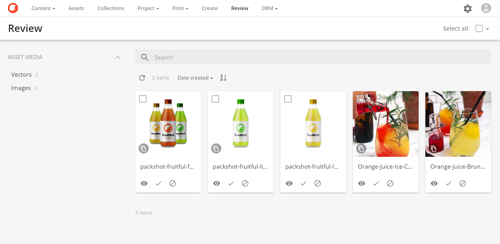
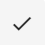
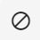
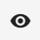
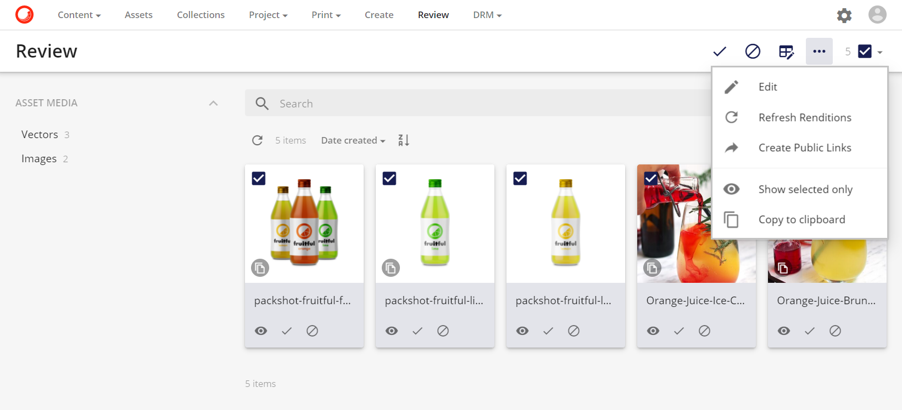
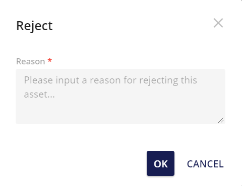

ページレビュー
作成ページで承認のために提出されたアセットは、レビューページに表示されます。レビューページは、アセットをコンテンツで利用可能にしたり、検索可能にしたりする前の最終チェックポイントとして機能します。
基本的には、アセットの承認または拒否、アノテーションの追加、新しいファイルのバージョンのアップロード、メタデータの更新などが可能です。これらのアクションはすべてセキュリティ設定に依存します。
レビューページ

アセットは、サムネイルの下にある承認 または却下  のアクションボタンを押すか、アセットの詳細にある プレビュー  を押すことで、個別に承認または拒否することができます。
アセットを選択し、選択したドロップダウンボックスで該当するアクション（承認または拒否）を選択することで、アセットを一括承認または拒否することができます。
選択ドロップダウン > 承認/拒否

承認・不承認は、ページ右上の通知メッセージで確認されます。アセットが却下された場合は、却下理由をレビューアが指定する必要があります。
拒否ポップアップ

この拒否コメントは、アセット詳細ページのプレビューの下にある「作成」ページ（ステータス「拒否」でフィルタリング可能）で、アセット（またはドラフト）の作成者に表示されます。